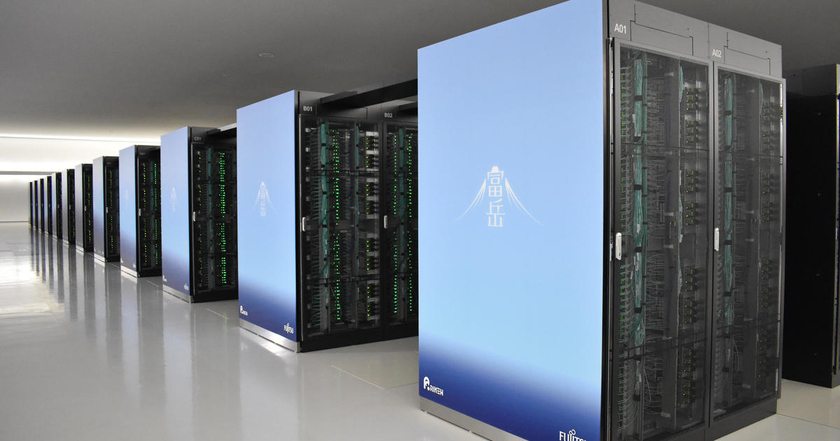
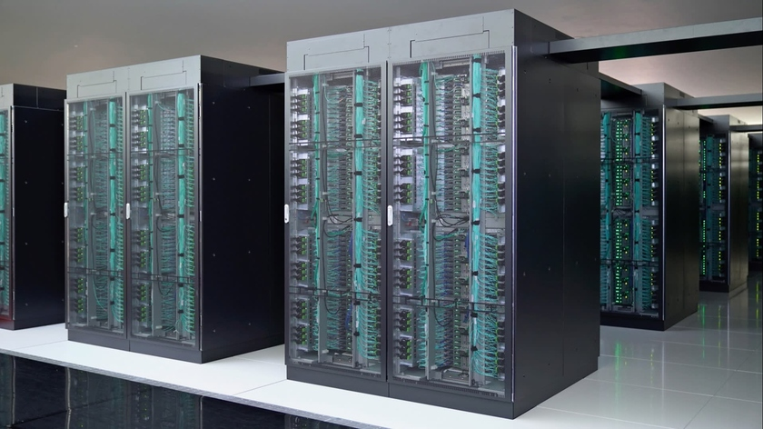
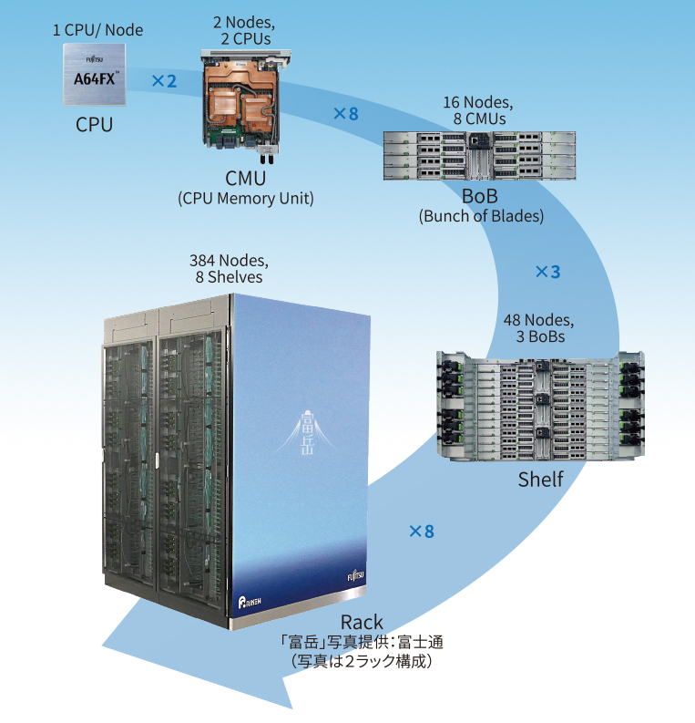

Современные суперкомпьютеры
Суперкомпьютеры - это вычислительные системы экстремальной производительности, используемые для решения сложнейших научных и инженерных задач. Лидером в этой области является японский Fugaku.
Характеристики Fugaku:
- Пиковая производительность: 442 петафлопс
- Процессоры: 158,976 процессоров Fujitsu A64FX
- Ядер: 7,630,848 вычислительных ядер
- Оперативная память: 4.8 ПБ (петабайт)
- Энергопотребление: 29,899 кВт
- Занимаемая площадь: 720 м²
- Вес: 700 тонн
- Система охлаждения: Водяное охлаждение
Fugaku используется для моделирования климата, разработки лекарств, прогнозирования землетрясений и создания новых материалов. Его вычислительная мощность превышает 7 миллионов современных ноутбуков!


